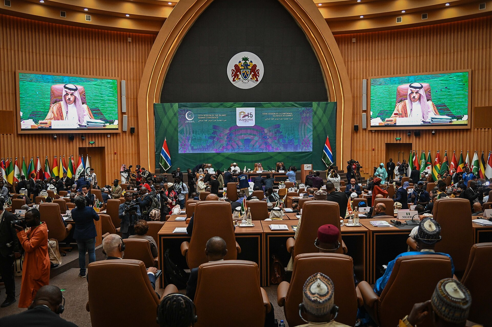

Oʻzbekistonning Islom Konferensiyasi Tashkilotiga aʼzo boʻlishi (1995–1996)
Mustaqillikdan soʻng Oʻzbekiston musulmon dunyosi bilan rasmiy aloqalarini tikladi. 1995-yil kuzida Nyu-Yorkda boʻlib oʻtgan tashqi ishlar vazirlarining favqulodda yigʻilishida Oʻzbekiston Islom Konferensiyasi Tashkilotiga (IKT) kuzatuvchi sifatida qabul qilindi, 1996-yil 2-oktabrda esa toʻliq aʼzo boʻldi. Bu — mamlakatning diniy tiklanishi va koʻp tomonlama tashqi siyosatining bir qismi edi. 2011-yilda tashkilot nomi Islom Hamkorlik Tashkiloti deb oʻzgartirildi. Tarixiy maʼlumotnoma — faqat faktlar asosida.

1991-yilda mustaqillikka erishgan Oʻzbekiston qisqa muddat ichida oʻnlab xalqaro tashkilotlarga qoʻshildi. Shular orasida musulmon davlatlari jamiyati bilan rasmiy aloqani belgilagani — Islom Konferensiyasi Tashkilotiga (IKT) aʼzo boʻlishi edi. Quyida bu jarayon qachon va qanday kechgani faqat faktlar asosida tushuntiriladi.
Islom Konferensiyasi Tashkiloti nima
Islom Konferensiyasi Tashkiloti (inglizcha OIC) — musulmon koʻpchilikli davlatlarni birlashtiruvchi hukumatlararo tashkilot boʻlib, 1969-yilda tashkil etilgan. Uning bosh qarorgohi Saudiya Arabistonining Jidda shahrida joylashgan. Tashkilot aʼzolari oʻrtasida siyosiy, iqtisodiy va madaniy hamkorlikni, musulmon olamining umumiy manfaatlarini himoya qilishni maqsad qiladi. Bugungi kunda u 57 ta aʼzo davlatni birlashtiradi.
Oʻzbekistonning qoʻshilish yoʻli
Oʻzbekiston IKTga ikki bosqichda qoʻshildi. 1995-yil kuzida Nyu-Yorkda tashkilot aʼzo davlatlari tashqi ishlar vazirlarining favqulodda yigʻilishida Oʻzbekiston Respublikasi kuzatuvchi (observer) maqomida qabul qilindi. Soʻngra 1996-yil 2-oktabrda mamlakat tashkilotning toʻliq huquqli aʼzosiga aylandi.

Tarixiy sharoit: diniy tiklanish davri
Bu qadam Oʻzbekistonning mustaqillikdan keyingi diniy tiklanishi bilan bir davrga toʻgʻri keldi. 1980-yillar oxiri — 1990-yillar boshida mamlakatda masjidlar qayta ochila boshlagan, haj safari tiklangan, diniy taʼlim qaytgan edi. IKTga aʼzolik — bu jarayonning tashqi siyosatdagi davomi boʻlib, Oʻzbekistonning oʻzini musulmon dunyosining bir qismi sifatida koʻrsatishi edi.
Koʻp tomonlama tashqi siyosat qismi sifatida
IKTga qoʻshilish Oʻzbekistonning mustaqillikning ilk yillaridagi keng tashqi siyosatining bir boʻgʻini edi. Shu davrda mamlakat Birlashgan Millatlar Tashkiloti (1992), Yevropada Xavfsizlik va Hamkorlik Tashkiloti, Iqtisodiy Hamkorlik Tashkiloti (ECO, 1992) va boshqa tuzilmalarga aʼzo boʻldi. IKT aʼzoligi esa mamlakatga musulmon davlatlari bilan maxsus platformada hamkorlik qilish imkonini berdi.
Tashkilotning yangi nomi (2011)
2011-yilda tashkilotning rasmiy nomi «Islom Konferensiyasi Tashkiloti»dan «Islom Hamkorlik Tashkiloti» (Organization of Islamic Cooperation) deb oʻzgartirildi; qisqartmasi (OIC) saqlanib qoldi. Shu bois Oʻzbekiston 1996-yilda aʼzo boʻlgan tashkilot bugun «Islom Hamkorlik Tashkiloti» nomi bilan yuritiladi.
Keyingi hamkorlik: 2016-yilgi Toshkent sessiyasi
Aʼzolikdan keyingi oʻn yilliklarda Oʻzbekiston tashkilot doirasidagi tadbirlarda ishtirok etdi. Muhim bosqichlardan biri — 2016-yil oktabrda Toshkentda IKT Tashqi ishlar vazirlari Kengashining 43-sessiyasi oʻtkazilishi boʻldi. Bu Oʻzbekistonning tashkilot faoliyatidagi faol ishtirokini koʻrsatgan voqealardan biri sanaladi.
Nega bu tarix muhim
Oʻzbekistonning IKTga aʼzo boʻlishi — mustaqil davlatning oʻz identitetini belgilashdagi qadamlardan biri: mamlakat ham dunyoviy respublika, ham musulmon koʻpchilikli jamiyat sifatida oʻzini xalqaro maydonda qanday joylashtirganini koʻrsatadi. Diaspora uchun bu — vatanning musulmon dunyosi bilan rasmiy aloqalari qachon va qanday shakllanganini tushunishga yordam beradi. Maʼlumotnoma faqat tarixiy faktlarga asoslanadi.

Manbalar
- Embassy of Uzbekistan — Uzbekistan–OIC cooperation (observer status autumn 1995; full member 2 October 1996)
- Wikipedia — Foreign relations of Uzbekistan (OIC membership)
- Wikipedia — Organisation of Islamic Cooperation (founded 1969, HQ Jeddah, 57 members, renamed 2011)
- Uzbekistan and the 43rd session of the OIC Council of Foreign Ministers, Tashkent, October 2016